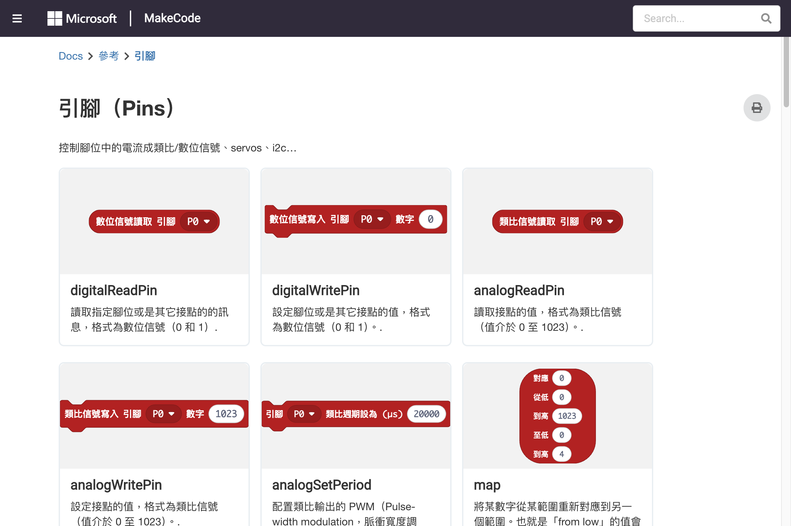

digital/analog read/write、servo、I2C
Micro:bit 底部有三個大型接腳（0、1、2）和兩個小型接腳（3V、GND），可用來連接外部電子元件。
| 接腳 | 功能 | 說明 |
|---|---|---|
| P0 | 通用 I/O | 支援數位/類比讀寫、PWM |
| P1 | 通用 I/O | 支援數位/類比讀寫、PWM |
| P2 | 通用 I/O | 支援數位/類比讀寫、PWM |
| P3-P28 | 擴充接腳 | 需透過 edge connector 存取 |
| 3V | 電源輸出 | 提供 3V 電源給外部元件 |
| GND | 接地 | 共用接地線 |
on start pins digital write pin P0 to 1 pause 1000 pins digital write pin P0 to 0
將接腳設為 HIGH（1）或 LOW（0），用來控制 LED、繼電器等數位元件。
forever
if pins digital read pin P0 == 1 then
show icon Yes
else
show icon No
pause 100
讀取接腳的狀態：1（HIGH）或 0（LOW），常用於讀取按鈕或開關。
| 積木 | 參數 | 回傳 | 說明 |
|---|---|---|---|
digital write pin | pin, value (0/1) | — | 設定接腳為 HIGH 或 LOW |
digital read pin | pin | 0 或 1 | 讀取接腳的數位狀態 |
digital read pin (buffer) | pin | Buffer | 讀取多個接腳的數位狀態 |
on start pins analog write pin P0 to 512 pause 1000 pins analog write pin P0 to 0
輸出 0~1023 的 PWM 訊號，用來控制 LED 亮度、馬達轉速等。
forever let value = pins analog read pin P0 show number value pause 500
讀取接腳的類比電壓值，範圍 0~1023（對應 0~3.3V）。
| 積木 | 參數 | 回傳 | 說明 |
|---|---|---|---|
analog write pin | pin, value (0-1023) | — | 輸出 PWM 訊號 |
analog read pin | pin | 0-1023 | 讀取類比電壓值 |
analog set period pin | pin, microseconds | — | 設定 PWM 週期 |

Pins 積木參考
on button A pressed pins servo write pin P0 to angle 0 pause 500 pins servo write pin P0 to angle 90 pause 500 pins servo write pin P0 to angle 180 pause 500 pins servo write pin P0 to angle 90
Servo（伺服馬達）可精確旋轉到指定角度（0~180°）。
| 積木 | 參數 | 說明 |
|---|---|---|
servo write pin | pin, angle (0-180) | 設定 Servo 旋轉角度 |
servo set pulse pin | pin, pulse (µs) | 設定 Servo 脈衝寬度 |
servo write pin (range) | pin, range | 設定 Servo 角度範圍 |
I2C 是一種常用的序列通訊協定，可用來連接 OLED 螢幕、感測器模組等。
on start let value = pins i2c read number 0x48 command 0 temperature format Int8LE show number value
on start pins i2c write number 0x48 command 0 value 255
| 積木 | 參數 | 說明 |
|---|---|---|
i2c read number | address, command, format | 從 I2C 裝置讀取數值 |
i2c write number | address, command, value | 向 I2C 裝置寫入數值 |
i2c read buffer | address, size | 從 I2C 裝置讀取緩衝區 |
i2c write buffer | address, buffer | 向 I2C 裝置寫入緩衝區 |
on start pins.spi write 0 let value = pins.spi read
SPI 是另一種常用的高速序列通訊協定，適合需要較高資料傳輸率的應用。
| 積木 | 說明 |
|---|---|
pins set audio pin | 設定音訊輸出接腳 |
pins set power mode | 設定省電模式 |
pins voltage | 讀取供電電壓 |
let brightness = 0 on start brightness = 0 forever pins analog write pin P0 to brightness * 10 brightness = (brightness + 1) % 101 pause 20
透過 PWM 控制外部 LED 亮度，實現呼吸燈效果。
on start
pins set pull pin P0 to PullUp
forever
if pins digital read pin P0 == 0 then
show icon Heart
else
clear screen
pause 100
使用內部 Pull-up 電阻，當外部按鈕按下時接腳變為 LOW。